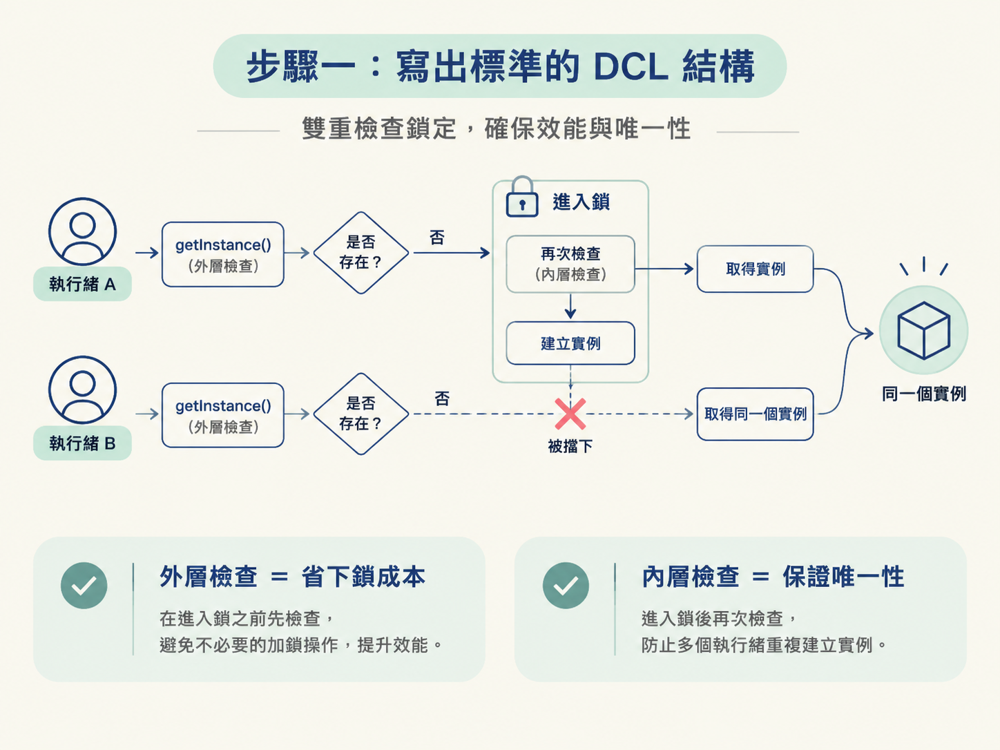
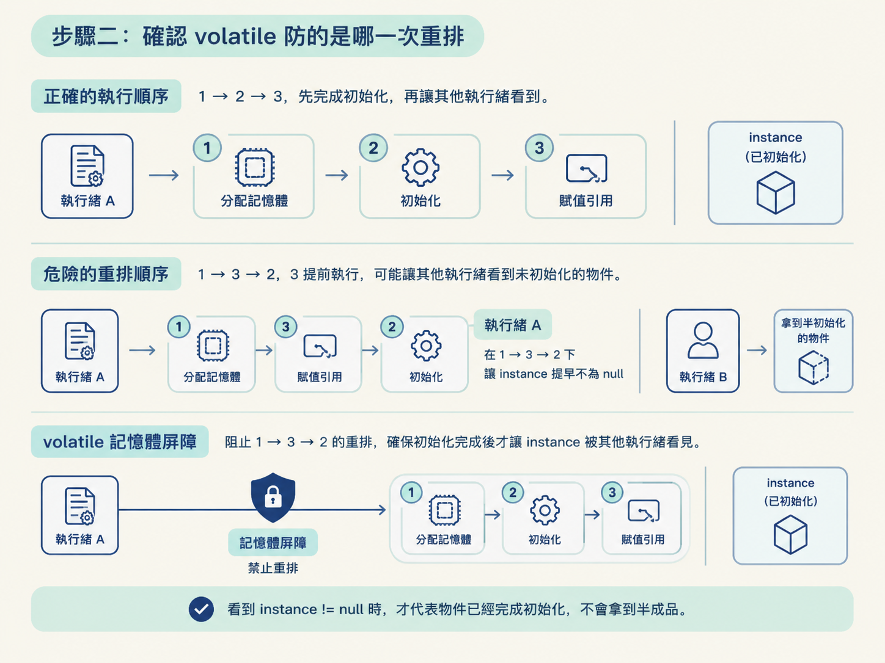
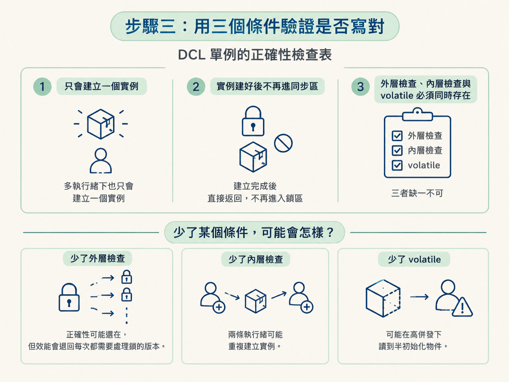

volatile當一個元件整個程式只需要一份實例時，你通常會希望它用到才建立，而不是類別一載入就先建立好。但如果兩條執行緒同時第一次呼叫，單純的懶加載可能會建立出兩個實例；如果把整個方法都鎖住，又會讓已經建立好的實例每次都排隊搶鎖。
這一課的目標，是照著寫出標準的 DCL（Double-Checked Locking，雙重檢查鎖定）單例，並能說清楚三件事：外層檢查為什麼是為了效能、內層檢查為什麼是為了唯一性，以及 volatile 如何避免其他執行緒拿到半初始化的物件。
你需要先知道 synchronized 提供互斥與可見性，也要知道 volatile 可以禁止特定的指令重排序。這一課不展開介紹它們的全部細節，而是直接把焦點放在：volatile 在 DCL 裡究竟要擋住哪一次重排。
所謂重排序，是編譯器和 CPU 為了讓程式跑得更快，在不改變單執行緒結果的前提下，調整指令執行順序。這個最佳化在一般情況下沒有問題，但 DCL 需要特別防範它。
先準備三個角色：用 volatile 宣告實例欄位、把構造方法設為私有，並提供一個公開的靜態方法作為唯一訪問入口。
public class Singleton {
// 1. 必須是 volatile，禁止指令重排
private static volatile Singleton instance;
// 2. 構造方法私有化，防止外部 new
private Singleton() { }
// 3. 公共的靜態訪問點
public static Singleton getInstance() {
if (instance == null) { // 第一次檢查：先不加鎖
synchronized (Singleton.class) {
if (instance == null) { // 第二次檢查：進鎖後再確認
instance = new Singleton();
}
}
}
return instance;
}
}這段程式可以直接分成三個檢查點來看。每個部分少了，都會造成不同問題。
第一次 if (instance == null) 在鎖外面。實例還不存在時，執行緒才需要繼續往同步區走；一旦實例建立完成，後續呼叫會在這裡直接拿到結果，不必每次都搶鎖。
如果把整個 getInstance() 都標成 synchronized，雖然容易理解，但實例建立後仍然要進入同步機制。對大多數只是想取得既有實例的呼叫來說，這是多餘的成本。
第二次檢查放在鎖裡，是為了保證唯一性。
假設執行緒 A 和 B 同時通過外層檢查。A 先取得鎖並建立實例，接著釋放鎖；如果 B 取得鎖後不再檢查，就會以為自己也該建立一個新實例。這樣單例就失效了。
因此，若外層檢查發現實例不存在，就進入鎖；進入鎖後，必須再確認一次。外層檢查負責降低成本，內層檢查負責避免重複建立。

new構造方法必須是 private。否則即使 getInstance() 寫得完全正確，外部程式仍然可以直接執行 new Singleton()，從旁邊建立另一個實例，單例的規則就被繞過了。
volatile 防的是哪一次重排這行程式：
instance = new Singleton();看起來像一步完成，但在 JVM 層面可以拆成三個動作：
instance 指向這塊記憶體位址。我們期待的順序是 1 → 2 → 3。不過，編譯器或 CPU 可能為了最佳化，把第 3 步提前到第 2 步之前，形成 1 → 3 → 2。
這時就會出現危險的時間差。執行緒 A 做完第 3 步後，instance 已經不是 null，但構造方法可能還沒完成。這代表其他執行緒看到的不是一個完整物件，而是一個半初始化物件。
如果執行緒 B 此時進入外層檢查，看到 instance != null，就會直接把它當成完成品使用。結果可能是讀到尚未初始化的欄位，甚至造成程式錯誤。
volatile 的作用，是透過記憶體屏障禁止這種 1 → 3 → 2 的重排，確保初始化完成後才讓 instance 被其他執行緒看見。也就是說，看到 instance != null 時，才代表物件已經完成初始化，不會拿到半成品。

volatile 的錯誤版本常見錯法：只寫synchronized雙重檢查，卻把instance宣告成普通欄位（沒加volatile）。這種程式在多數測試環境看起來都正常，但在高併發下會偶發「拿到的物件欄位是預設值」的怪問題，而且極難重現——這正是面試官最想聽你講出來的那個點。
這類問題難抓，是因為它不是每次都發生。低併發或測試時可能完全看不出來，但一旦執行緒剛好撞上重排序造成的時間差，就可能使用到尚未完成初始化的物件。
完成後，逐項確認以下結果：
getInstance()，最後取得的都應該是同一個物件。volatile、外層檢查與內層檢查都必須存在，不能只保留其中一部分。少了外層檢查，正確性可能還在，但效能會退回每次都需要處理鎖的版本。少了內層檢查，兩條執行緒可能重複建立實例。少了 volatile，則可能在高併發下讀到半初始化物件。

DCL 單例 = 兩次instance == null檢查 + 一個volatile。instance必須是volatile，用來禁止new指令的 1→3→2 重排，避免執行緒拿到半初始化物件；第一次檢查在鎖外，是為了讓實例建好後免去搶鎖、提升效能；第二次檢查在鎖內，是為了防止兩條執行緒都通過外層檢查、其中一條重複建立、讓單例失效。構造方法也要記得私有化，否則外面的new會直接破壞單例。
做到這裡，你應該能從程式碼直接指出三個結果：實例只會建立一次、建立完成後的呼叫不必再搶鎖，以及其他執行緒不會看見半初始化物件。下一步可以觀察鎖的另一面：當執行緒彼此等待、誰也無法繼續時，就會形成死鎖。